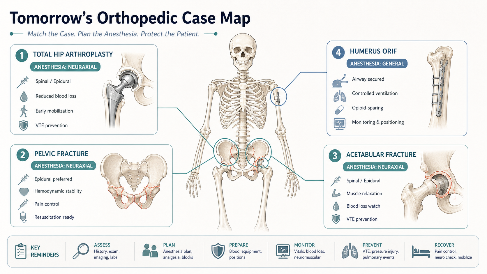
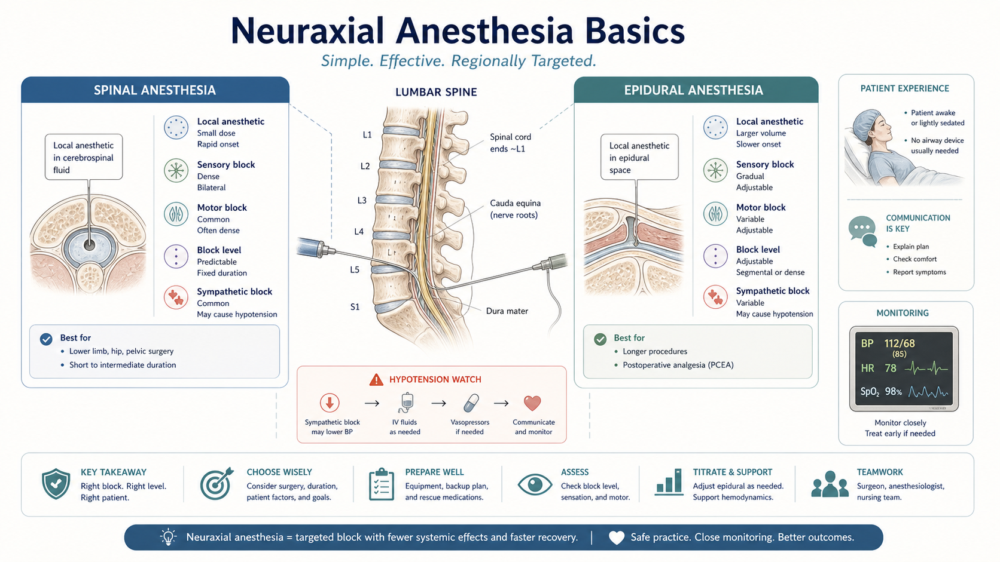
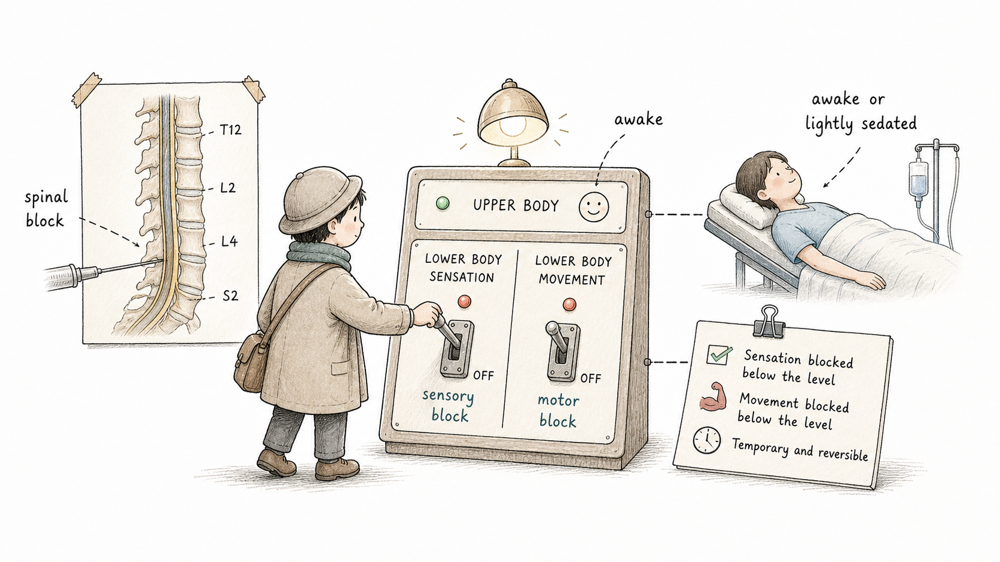
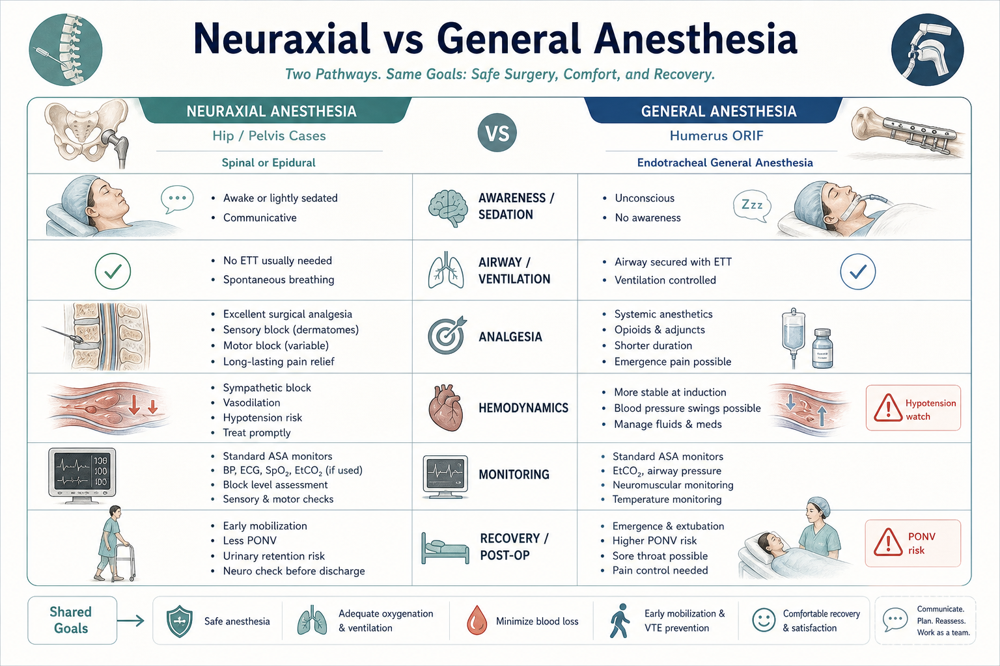
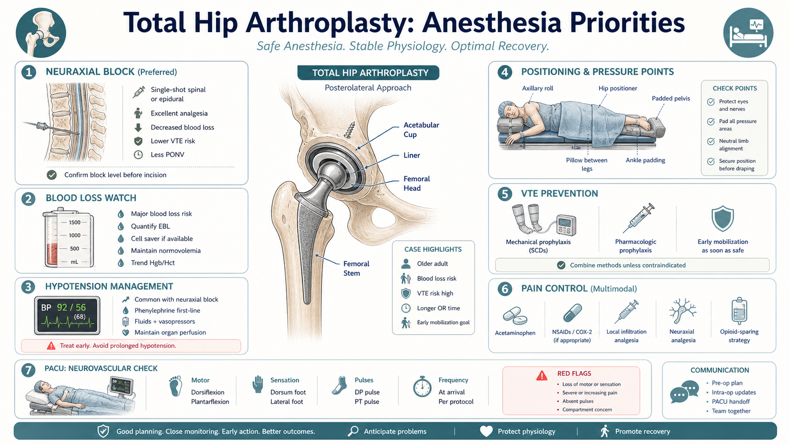
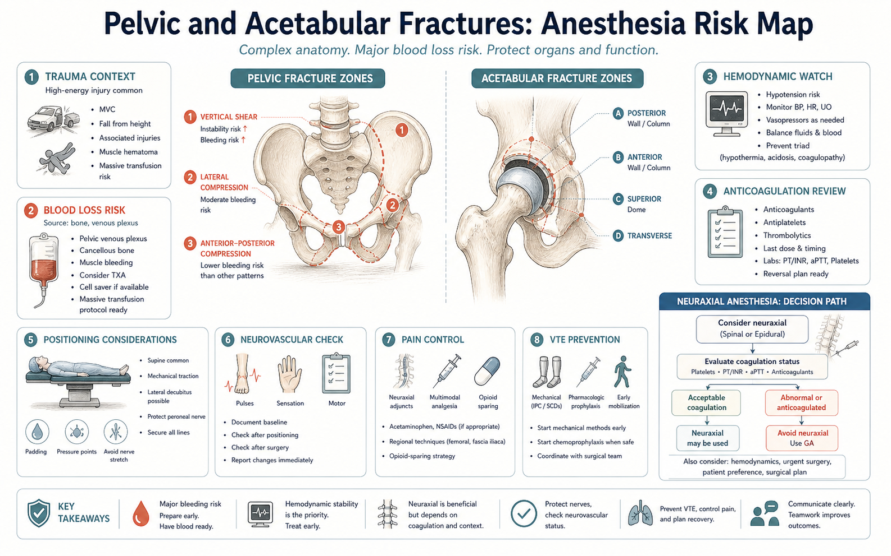
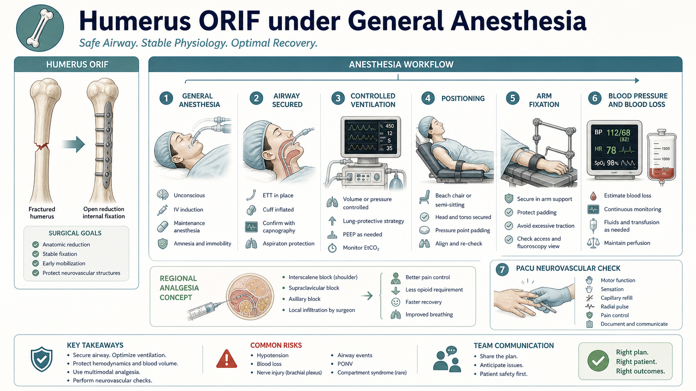
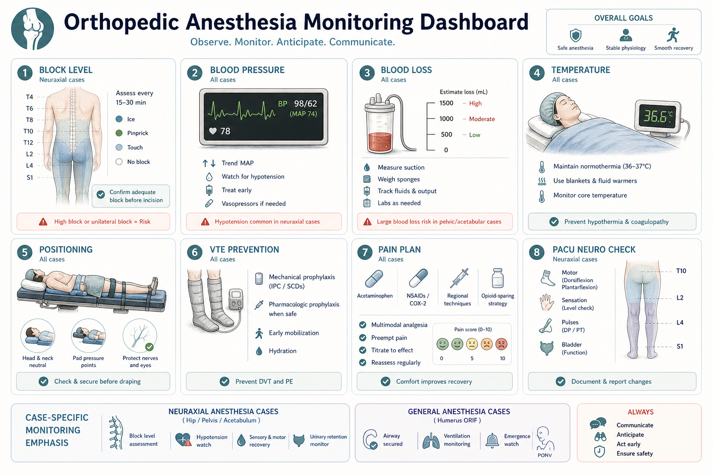
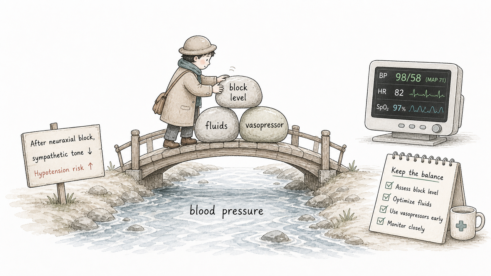
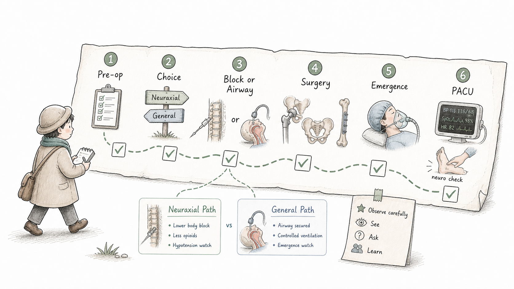

Start Here
骨科麻醉第一步：先看手术部位，再看麻醉方式First Step: Look at the Surgical Site, Then the Anesthesia Choice
骨科手术并不是都用同一种麻醉。髋关节、骨盆和髋臼手术主要在下半身，椎管内麻醉可以提供有效的下肢/骨盆区域麻醉，同时减少对气道操作的依赖。肱骨骨折 ORIF 位于上肢，手术固定、牵拉、体位和舒适度常需要全身麻醉配合。
Orthopedic surgery does not use one anesthesia plan for every case. Hip, pelvis, and acetabulum surgery occurs mainly in the lower body, where neuraxial anesthesia can provide effective regional anesthesia and reduce reliance on airway instrumentation. Humerus ORIF is an upper-extremity procedure, where fixation, traction, positioning, and comfort often fit better with general anesthesia.
Tomorrow's Case Map
四类手术：先把位置和麻醉方式对应起来Four Cases: Match Anatomy with Anesthesia Plan
学生先不需要记住所有技术细节，只需要建立空间地图：髋关节置换在髋关节，骨盆骨折在骨盆环，髋臼骨折在髋臼窝，肱骨 ORIF 在上臂。手术位置决定了体位、失血、镇痛、神经血管检查和麻醉方式。
The student does not need every technical detail first. Build the map: THA is at the hip joint, pelvic fracture surgery involves the pelvic ring, acetabular fracture surgery involves the hip socket, and humerus ORIF is in the upper arm. Location shapes positioning, blood loss, analgesia, neurovascular checks, and anesthesia choice.

Neuraxial Anesthesia Basics
椎管内麻醉：阻滞下半身感觉和运动，不等于“没有麻醉”Neuraxial Anesthesia: Lower-Body Block, Not “No Anesthesia”
椎管内麻醉包括蛛网膜下腔麻醉 `spinal anesthesia` 和硬膜外麻醉 `epidural anesthesia` 等方式。局麻药作用在脊神经附近，使相应节段的感觉、疼痛和运动被暂时阻滞。病人可能清醒或轻度镇静，但下半身手术区域可以达到手术麻醉效果。
Neuraxial anesthesia includes spinal anesthesia and epidural anesthesia. Local anesthetic acts near the spinal nerves, temporarily blocking sensation, pain, and movement at relevant levels. The patient may be awake or lightly sedated, while the lower-body surgical field can still be anesthetized.


Neuraxial vs General Anesthesia
椎管内麻醉和全麻的差异：不是谁更高级，而是谁更适合Neuraxial and General Anesthesia: Not Better or Worse, Just Better Matched
椎管内麻醉通常保留自主呼吸和清醒/轻镇静状态，但要观察麻醉平面、低血压和运动恢复。全身麻醉让患者失去意识，需要气道管理和通气控制，更适合某些上肢手术、复杂体位或需要完全制动的情况。临床选择取决于手术部位、患者状态、凝血、沟通配合和医生判断。
Neuraxial anesthesia often preserves spontaneous breathing and awake/lightly sedated status, but requires block-level, hypotension, and motor recovery monitoring. General anesthesia produces unconsciousness and requires airway and ventilation management, fitting some upper-extremity surgeries, complex positioning, or the need for complete immobility. The choice depends on surgical site, patient status, coagulation, cooperation, and clinician judgment.

Total Hip Arthroplasty
全髋关节置换：椎管内麻醉下仍要认真看失血、血压和 VTETotal Hip Arthroplasty: Under Neuraxial, Still Watch Blood Loss, BP, and VTE
全髋关节置换常涉及较大骨面操作、体位变化、失血、血流动力学变化和术后疼痛。椎管内麻醉可以提供有效的下肢麻醉和术后镇痛优势，但交感阻滞可能导致低血压，术中仍需严密监测。
Total hip arthroplasty can involve major bony work, positioning, blood loss, hemodynamic changes, and post-op pain. Neuraxial anesthesia can provide effective lower-extremity anesthesia and analgesic benefit, but sympathetic block may cause hypotension, so monitoring remains important.

Pelvic and Acetabular Fractures
骨盆和髋臼骨折：创伤背景让麻醉更复杂Pelvic and Acetabular Fractures: Trauma Context Makes Anesthesia More Complex
骨盆和髋臼骨折与择期关节置换不同，常带有创伤背景。麻醉前需要关注失血、凝血、抗凝用药、疼痛、体位、神经血管功能和术前影像。椎管内麻醉是否合适，必须结合凝血状态、感染风险、患者配合和整体风险判断。
Pelvic and acetabular fractures differ from elective arthroplasty because they often come with trauma context. Before anesthesia, consider blood loss, coagulation, anticoagulants, pain, positioning, neurovascular function, and imaging. Whether neuraxial anesthesia is appropriate depends on coagulation status, infection risk, cooperation, and overall risk assessment.

Humerus ORIF under General Anesthesia
肱骨骨折 ORIF：为什么用全身麻醉Humerus ORIF: Why General Anesthesia Fits
肱骨骨折切开复位内固定属于上肢手术。全身麻醉可以提供意识消失、气道控制、通气控制和稳定制动，便于手术牵拉、复位和内固定。术后仍要关注疼痛、恶心呕吐、上肢感觉运动、桡神经相关功能和血运情况。区域神经阻滞可作为镇痛概念理解，但具体方案由麻醉医生决定。
Humerus ORIF is an upper-extremity surgery. General anesthesia provides unconsciousness, airway control, ventilation control, and immobility, supporting traction, reduction, and fixation. Postoperatively, observe pain, PONV, upper-extremity sensation and movement, radial-nerve-related function, and perfusion. Regional nerve block can be understood as an analgesia concept, but the plan is clinician-specific.

Monitoring and Safety
术中看什么：阻滞平面、血压、失血、体位、体温和 VTEWhat to Watch: Block Level, BP, Blood Loss, Position, Temperature, and VTE
骨科麻醉的监测不是只盯一个数字。椎管内病例要看麻醉平面、血压、运动恢复和尿潴留风险；创伤骨折要看失血、凝血和体位；全麻病例要看气道、通气和苏醒。所有骨科手术都要重视 VTE 预防、体位压力点、体温和术后神经血管检查。
Orthopedic anesthesia monitoring is not one number. In neuraxial cases, watch block level, BP, motor recovery, and urinary retention risk. In trauma fracture cases, watch blood loss, coagulation, and positioning. In GA cases, watch airway, ventilation, and emergence. Across orthopedic surgery, VTE prevention, pressure points, temperature, and post-op neurovascular checks matter.

PACU and Pain Plan
术后恢复：不只是醒来，还要看疼痛、神经和血运Recovery: Not Just Awake, but Pain, Nerves, and Perfusion
骨科术后 PACU 重点包括生命体征、疼痛评分、恶心呕吐、麻醉平面消退、下肢或上肢感觉运动、神经血管功能、出血、体温和 VTE 预防。椎管内麻醉后要观察运动恢复和尿潴留；肱骨 ORIF 后要关注手指活动、感觉、颜色、温度和桡神经相关功能。
PACU priorities include vital signs, pain score, nausea and vomiting, regression of block level, limb sensation and movement, neurovascular function, bleeding, temperature, and VTE prevention. After neuraxial anesthesia, observe motor recovery and urinary retention. After humerus ORIF, check finger movement, sensation, color, temperature, and radial-nerve-related function.

Student Observation Route
学生自己怎么观察：六个节点How to Observe Independently: Six Checkpoints

Check Yourself
术后五个自测问题Five Post-Case Self-Check Questions
看完病例后，用 2 分钟回答：这台手术为什么选椎管内或全麻？椎管内麻醉后最需要看哪个循环问题？THA 和骨盆/髋臼骨折都要关注哪些共同风险？肱骨 ORIF 全麻的核心观察点是什么？PACU 神经血管检查包括什么？
After the case, answer in two minutes: Why was neuraxial or GA chosen? What circulation issue matters after neuraxial anesthesia? What shared risks matter in THA and pelvic/acetabular fractures? What are the core observation points in humerus ORIF under GA? What belongs in the PACU neurovascular check?